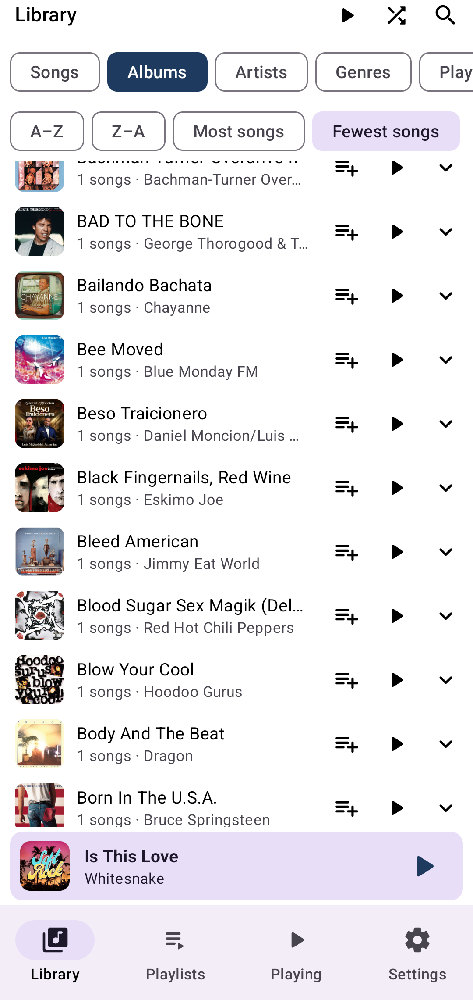
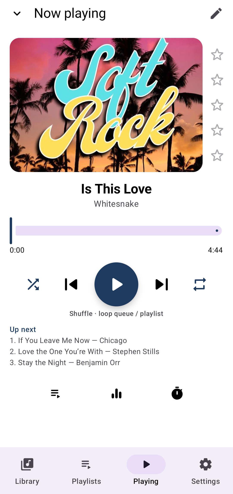
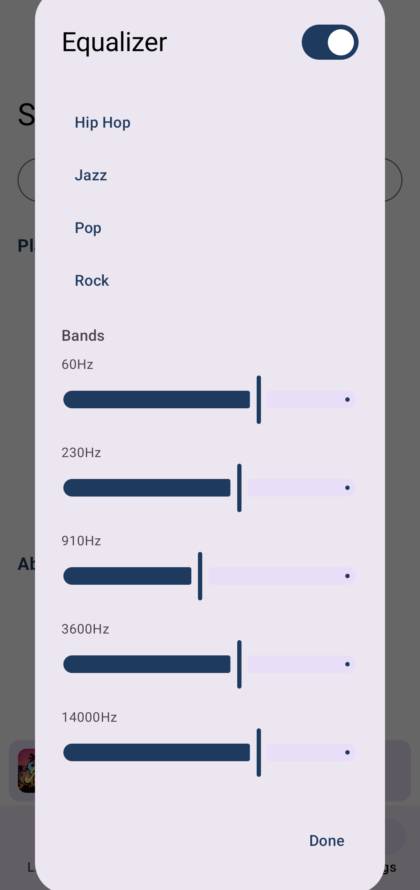
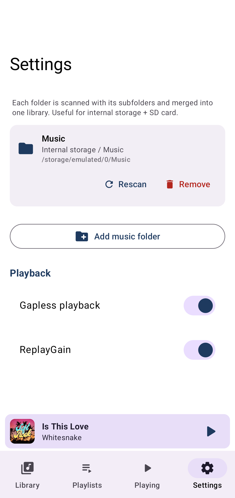

Core
La tua musica. Il tuo dispositivo. Niente cloud.




Mattina. Cuffie sul tavolo. Lo stream aspetta la rete. Poi un account. Poi l'abbonamento.
I file sono ancora nel telefono. CorePlayer chiede solo dove cercare.
Aggiungi una cartella. Compare la musica. Chiudi la finestra. Continua a suonare.
Suona quello che hai già. Playlist. Equalizzatore. Timer per dormire.
Non è un catalogo di milioni di brani. Non suona nulla che non sia sul telefono.